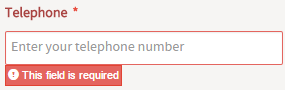

Advanced Developer
JavaScript
What JavaScript Can Do
JavaScript is very useful for improving the usability and functionality of Dynaforms. JavaScript can used to:
- Automatically hide and show fields based on users' actions.
- Change the text and the style properties of fields.
- Offer help and guide users with messages and alerts.
- Validate and standardize the data entered into fields.
- Automatically insert values into fields.
- Use field data to make calculations.
- Manage grid field operations.
- Check the data and force the user to change values before submitting a Dynaform.
- Open and close other browser windows.
For more information, read this section.
What JavaScript Can NOT Do
JavaScript is only a browser-side language. For security reasons, the language is limited to the data available in Dynaforms (and in other browser windows). JavaScript is not designed to:
- Access data that is not in the Dynaform or one of the web browser windows.
- Access databases on the server (unless using XMLHttpRequest).
- Execute operations in the server (unless using XMLHttpRequest).
- Execute external programs (unless providing a link to a file that the web browser is configured to open with an external application).
For more information, read this section.
Considerations
- Take care when working with JavaScript in the forms. If it is not well structured, the forms will not render.
- Take care of clearly setting the IDs of the controls to be used in JavaScript. To obtain a control's input field in jQuery, the [ and ] characters have to be escaped with \\ in the jQuery selector to not be treated as a search for an attribute (read moref here).
- Use variables in camelCase.
- Do not use global variables. Make sure that the variables are only used in the function where they were defined.
- Do not use reserved words.
- Comment the source code to understand what it does.
- When working with JavaScript in the web edition and the ProcessMaker mobile application, first make sure that the mobile app supports the functions used, since both platforms are different.
- If there are too many lines of code, it is better to put them into to an external file and include it as an external resource using the external libs properties of the form.
- If using external libs, a specific function or some other function that manipulates the DOM, try to use native JavaScript.
- It is highly recommended to use ProcessMaker’s native JavaScript functions rather than complicated custom functions.
- In HTML, all numbers are treated as strings, so numbers will automatically be converted to strings when they are set as the value of a field (read more here).
Controls
Each control has an outer DIV whose ID is set to the control's ID. Inside that DIV is located the control's element, which can be an <input>, <textarea>, <select>, <button>, <img>, <a>, <span>, etc; most of these have an ID of "form[id]". To select these elements with jQuery, the characters [ and ] have to be escaped with \\, so an element is referenced as: $("#form\\[id\\]") (read more here)
Example:
A function that displays several fields and is named "displayClients()" is defined. It is assigned as the event handler for the click event of the display button:
function displayClients() {
$("#clientSection")[0].style.display = "";
$("#selectClientType")[0].style.display = "";
return true; //return true to execute default action for click event
}
document.getElementById("form[display]").onclick = displayClients;Note that function references should not include parentheses, because it could cause the function to be executed when assigning the event handler, which then would return a value of true and assign that value as the event handler (read more here).
- Do not force any event. This may cause some functionalities to no longer work correctly.
- Custom JavaScript and CSS files to be included in the Dynaform with the external libs property, and a web-accessible place is needed to store them. To do this, place custom files in the <INSTALLATION-DIRECTORY>/workflow/public_html/ directory. Then, they should be web accessible at the URL:
http://<SERVER-ADDRESS>:<PORT>/<FILENAME.EXT>
Any file uploaded to the Public Files manager is publicly accessible, so the JavaScript code cannot be hidden from the general public. To keep your code secret, do not use this method to access these external libs (read more here).
- The getHintHtml() method does not work with Backbone objects.
- The setOnchange() works the same way when used with Backbone objects, but it is named .setOnChange() (with uppercase C).
The value of a control should only be changed using setValue() or setText(). It should not be changed by setting its value property, because then the value will not be set in the hidden field of each control, nor will the value be changed in the control's Backbone object, so it will not be saved correctly when the Dynaform is submitted.
NEVER do this:
(read more here)document.getElementById("AccountNo").value = "ARB-501"; //will not set value correctly- Attributes are the values of an element that are usually defined in its HTML definition and are usually set before it is rendered on the screen. In contrast, properties are the values of an element that are usually set when it is added to the the DOM and rendered on the screen. Unlike attributes, which usually do not change and are fixed in the initial definition, properties often can be changed by the user. Attributes should be accessed with .attr(), whereas properties should be accessed with .prop().
<input id="company" type="text" value="Acme, Inc.">
In the example below, id, type and value are defined in the HTML code and are attributes, but align, autofocus, and baseURL are set when the element is rendered and are properties. For most values, it doesn't matter whether they are accessed with .attr() or .prop(), but it can make a difference in some situations. For example, if the user changes the value of this textbox from "Acme, Inc." to "Wiley Enterprises", calling $("#company").attr("value") will return "Acme, Inc.", which was the initial value and is fixed. However, calling $("#company").prop("value") will return "Wiley Enterprises", which is the current property and can be changed.
Example:
Set the target attribute to "_self" in a link control with the ID "companyLogo", so it will open the link in the same frame where the Dynaform is located. Remember that the element of a link control has an ID of "form[id]" and the characters [ and ] need to be escaped with \\.
$("#companyLogo").find("a").attr('target','_self');(read more here)
Note that style properties in JavaScript and DOM use camel case whereas, CSS uses lowercase with words separated by hyphens (-). However, css() can understand both styles, so .css("background-color") and .css("backgroundColor") are the same.
Example:
Get the width of a dropdown box with the ID "billingMethod" and then add 200 pixels to it, if less than the width of the screen:
(read more here)var wide = $("#billingMethod").getControl().css("width");
wide = parseInt(wide) + 200;
if (wide < screen.width - 100) {
$("#billingMethod").getControl().css("width", wide);
}- Most of the style properties for control's area should be set in the outer DIV with the "pmdynaform-field" class name, which is the child node. For example, to set the border color of a control's area to red and its background color to yellow:
getFieldById("totalAmount").$el.children().css("border", "1px solid red");
getFieldById("totalAmount").$el.children().css("background-color", "yellow");This is the same as using the jQuery selector function:
(read more here)$("#totalAmount").css("border", "1px solid red");
$("#totalAmount").css("background-color", "yellow"); The getLabel() and setLabel() functions do not work with panels since this control does not have a label associated. The text of the new label may contain HTML entities such as > for > and € for €, but HTML tags, such as <em> and <br>, will be treated like normal text. To format a control's label inside a panel, first use jQuery's /.find() method to search for the <span> with the "textlabel" class inside the control. Then, use its .html() method to add HTML code to the label. For example, the following code sets the label of the "contractDetails" field:
$("#contractDetails").find("span.textlabel").html(
'Select <big><font color="red">errors</font></big><br>in <em>document</em>')The above code will set the following label:

The getValue() function also does not work with panels.
setValue() does not work with panels, subforms and files. To set the contents of a panel, use code such as:
$("#mypanel").find(".panel-body").html("<em>New content!</em>")- Variables can only be inserted inside strings that are enclosed in double quotation marks (read more here).
Grids
Another way to set the value of a grid field is to set the value in its gridtable, which is a property of the grid's Backbone object. This method works in all versions of Processmaker 3:
getFieldById("gridId").gridtable[row][col].setValue("value")Remember that the row and column numbers in the gridtable array start counting from the number 0, so the second row is 1 and the third column is 2 (read more here).
getFieldById("pricesGrid").gridtable[1][2].setValue("23.40")- Note that grids will always have at least 1 row, since the first row can never be deleted (read more here).
- Note that the numbering of rows and columns in the gridtable starts from zero, so the first row is 0, the second row is 1, etc. In contrast, the IDs of the rows start numbering at 1, so controls in gridtable[0] (the first row) will have IDs of "form[gridId][1][control-id]" and controls in gridtable[1] (the second row) with have IDs of "form[gridId][2][control-id]" (read more here).
- Note that the grid.setValue() method can not be used to add new rows to grids; it can only be used to set the value of an existing control.
The getInfo() method does not work with Dynaforms, subforms or fields inside grids. The model information for subforms can not be obtained, although getInfo() works with the controls inside subforms. To get the model information about the controls inside grids, use the columns attribute. For example, to get the label of the third control inside a grid with the ID "clientsGrid":
var label = $("#clientsGrid").getInfo().columns[2].label;
Required Controls
- The disableValidation method doesn't change the field's required or validate properties. If the field doesn't have required checkbox marked and doesn't have a regular expression for its validate property, then disableValidation() will not have any effect, because the field doesn't require any validation.
- The enableValidation() method only reactivates the validation of a field whose validation has been deactivated with the disableValidation() method. It doesn't change the field's required or validate properties. If the field isn't marked as required, and doesn't have a regular expression for its validate property, then enableValidation() will not have any effect.
Saving Dynaforms
- When a form is saved, the values entered into the fields are saved to the variables associated with the fields. Those variables are stored in a serialized associative array in the wf_<workspace>.APPLICATION.APP_DATA field in the MySQL database where APP_UID is the case's unique ID (read more here).
When a form is saved, it checks that all the required fields are filled in and that fields with the validate property comply with the regular expression specified for the field. If a field does not meet these conditions, then the save action is stopped and an error message is displayed under the field, as in the following image:

or the following:

- The control.disableValidation() method can be used to prevent the Dynaform from checking fields before saving. Another way to prevent the validation of fields is to disable them:
(read more here)$("#id")[0].disabled = true
Checkboxes
- Note that checkboxes in Dynaforms always have a text label of "true" if marked, or "false" if unmarked.